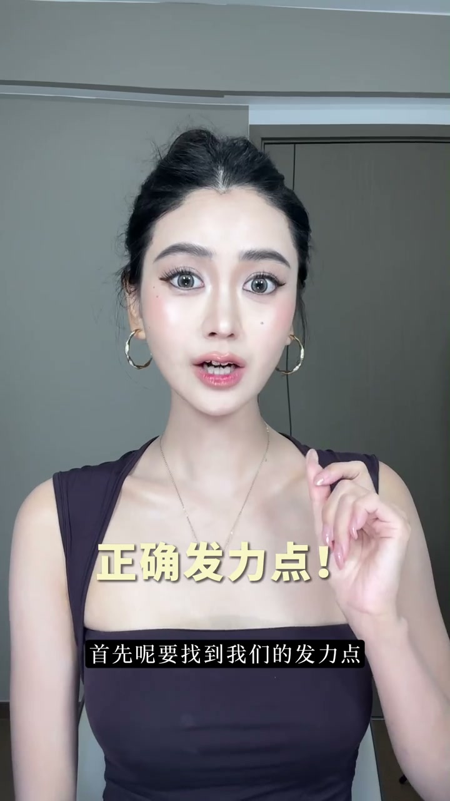
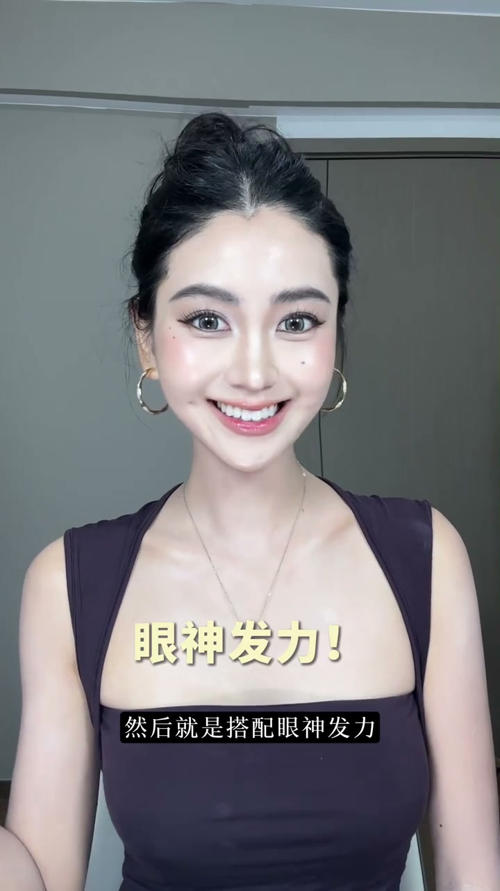
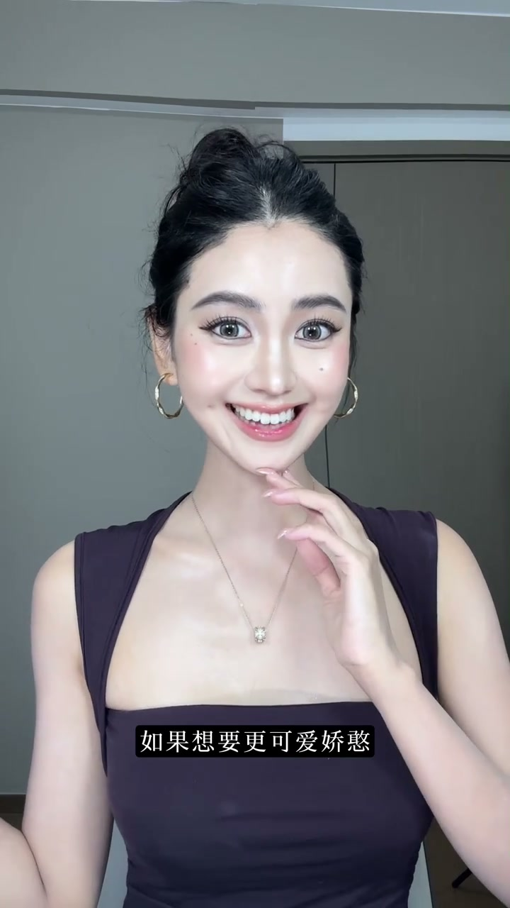
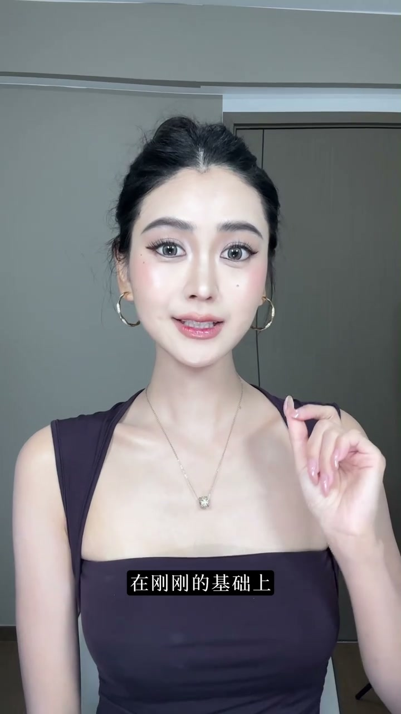
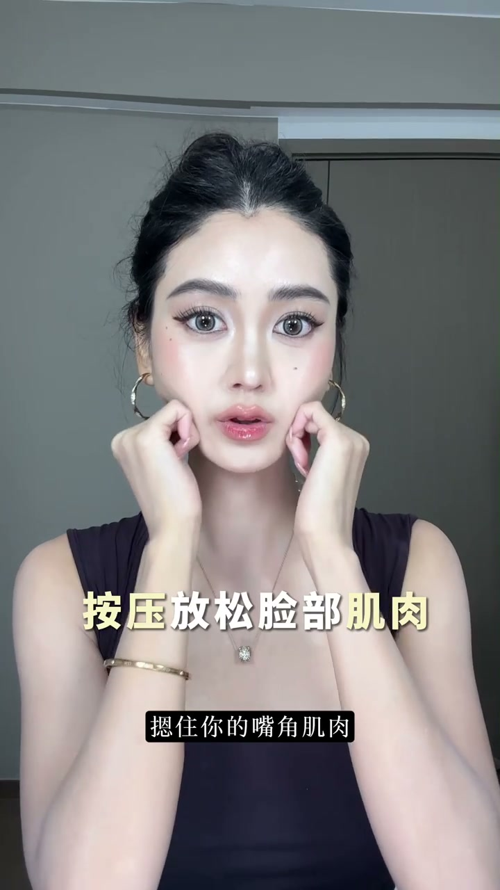

开场：笑容真的可以练出来
00:00很多粉丝说博主笑起来很有感染力，但镜头一转自己就不会笑。
00:08七年模特经验下来，证明笑容真的可以练出来——把上镜小技巧全部总结分享。

[00:08] 七年模特经验：笑容真的可以练出来
Seven years of modeling: a smile really can be trained
发力点：苹果肌向上，不横向拉
00:16首先要找到发力点：不是嘴角使劲发力，而是苹果肌向上发力，带动嘴角自然提上来。
00:22这样笑起来就不会横向地显脸大，反而有自然温柔的五官。嘴唇一定要放松，用力就会很僵硬。

[00:17] 发力点：苹果肌向上发力，带动嘴角自然提上来
Power point: the cheek apples push upward, naturally lifting the mouth corners
眼神加持：卧蚕发力点
00:30搭配眼神发力：眼睛微微，找到卧蚕的发力点——就是“想看清东西”的感觉。
00:38苹果肌自然牵动嘴角，这样笑起来眉眼弯弯，日常拍照温柔有灵气。

[00:31] 眼神加持：找卧蚕发力点，眉眼弯弯
Gaze boost: find the aegyo-sal's power point, brows and eyes curving
进阶：Wink与放肆大笑
00:42想要更可爱娇憨，搭配Wink；在基础版上就能接放肆大笑。
00:49大笑秘诀：只要发出“嗨”的音，这个时候的嘴角弧度漂亮又自然，眼睛也能跟着亮起来。再搭配刷头发回眸、看向镜头的生命力连招。

[00:50] 放肆大笑：发“嗨”音，嘴角弧度自然漂亮
Big open laugh: say “hai,” letting the mouth corners curve naturally and prettily
抬眉笑：拯救眼神空洞
01:03在外面拍照尴尬僵硬的话，试试抬眉笑。很多姐妹不会笑、眼神空洞，大部分是因为眉毛压住了眼神。
01:07只要轻轻一抬，眉眼就会特别舒展，眼神瞬间变得又亮又干净。
[01:03] 抬眉笑：眉毛压住眼神才空洞，轻抬眉眼舒展
Brow-lift smile: flat brows empty the gaze — a slight lift opens the face
肌肉按摩：养成肌肉记忆
01:12笑多了苹果肌、嘴角酸也不用担心：用两个拳头按住嘴角肌肉，按摩打圈30秒再练习。
01:19去感受微笑时的肌肉发力点，慢慢养成肌肉记忆。

[01:17] 双拳按住嘴角肌肉，打圈按摩30秒再练习
Press the corners of the mouth with both fists, massage in circles for 30 seconds, then practice
笑容不是天生的，是练出来的——苹果肌发力、眼神参与、抬眉解放，最后靠按摩养成肌肉记忆。